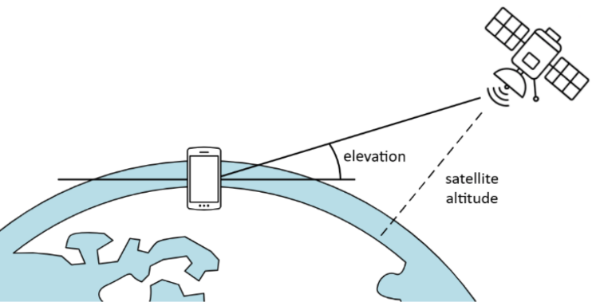
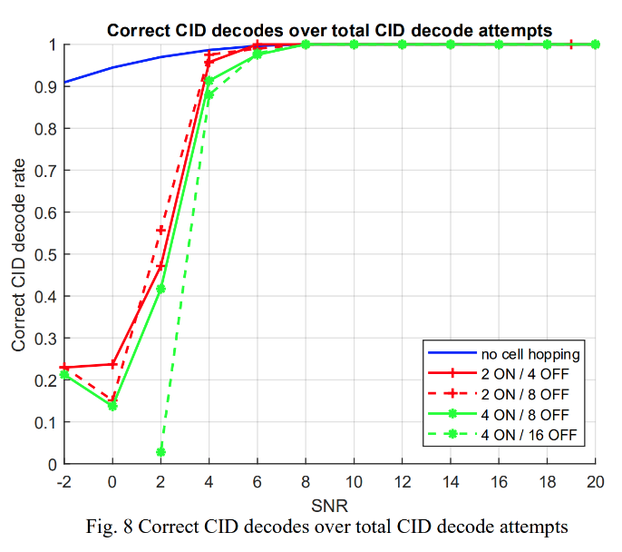

Tudor's articles
More seriuosly thought and expressed opinions can be found here.

Performance of the NB-IoT NPSS detection in a beam hopping scenario
This is the paper I wrote for my bacheleor's degree and for publication at the ICUMT 2025 conference.
Abstract: Internet of Things (IoT) has seen enormous growth, and there is a need for extending the reach of IoT networks to global coverage. Satellite networks promise to solve the global coverage issue, and new approaches to integrate nonterrestrial networks (NTN) into IoT are being researched, with some NTN IoT networks even commercially available. ...
